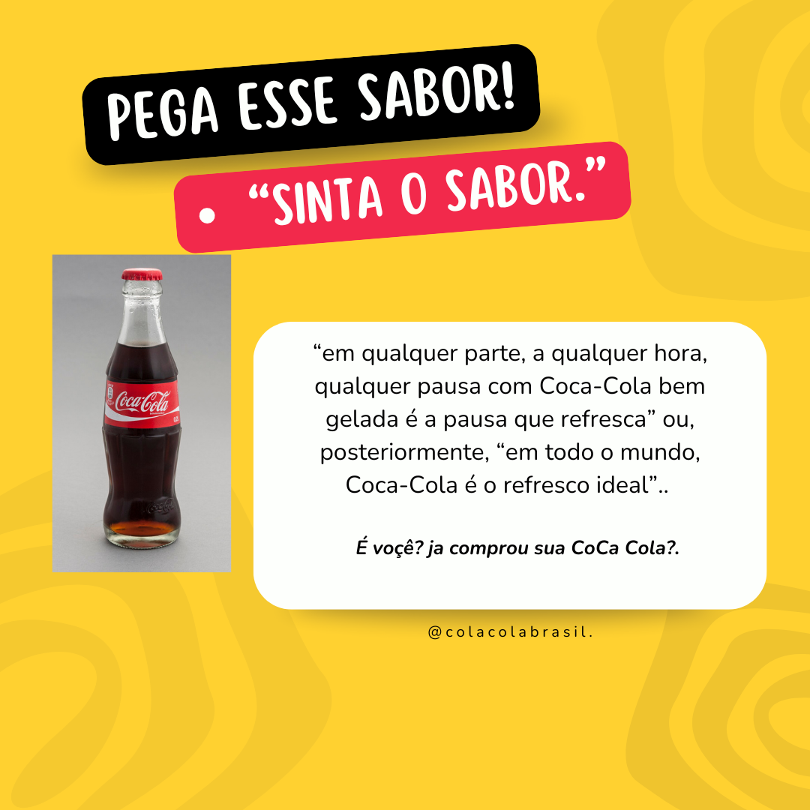

Anúncio Publiciário

Explique o que é Anúncio Publicitario
Anúncio publicitário é uma peça composta por textos, imagens, sons e/ou outros elementos com o objetivo de atrair a atenção das pessoas, informando-as sobre algum produto ou serviço. Também pode fazer parte da estratégia de divulgação ou construção de autoridade de uma marca.
Características do Anúncio Publicitario
As principais Características do anúncio publicitário sao:
- Caráter comercial
- LInguagem verbal e nao verbal
- Linguagem simples
- texto relevante curtos
- Textos persuasivos e atrativos
- Humor, ironia e criatividade
- Verbos no modo imperativo
- Figuras e vícios de linguagem
- Uso de cores, imagens, fotografias
Tipos de Anúncio Publicitario
Os tipos são:
- Verbal:traz, em geral, frases curtas e de efeito. É veiculado em meios nos quais o público se dedica à leitura, como jornais e revistas.
- Não Verbal:é aquele que usa somente imagens. Costuma ser usado em locais nos quais as pessoas não têm tempo para ler textos, como em estações de metrô e outdoors
- Misto:como o nome sugere, o formato misto combina texto e imagens. Pode ser usado em veículos mais tradicionais e também nas redes sociais.
Como fazer um Anúncio Publicitario
A sua estrutura:
- Titulo
-
- corpo do texto
convite á ação
Nosso comercio vendemos coca cola d qualidade, sempre extremamente gelada para refrescar os clientes, nisso criamos a frase:“em qualquer parte, a qualquer hora, qualquer pausa com Coca-Cola bem gelada é a pausa que refresca” ou, posteriormente, “em todo o mundo, Coca-Cola é o refresco ideal”. Assim atraimos mais clientia para experimentar a melhor coca ja vendida.